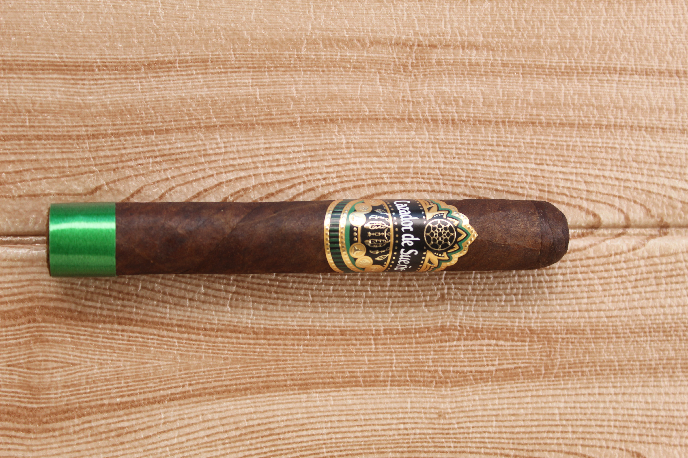
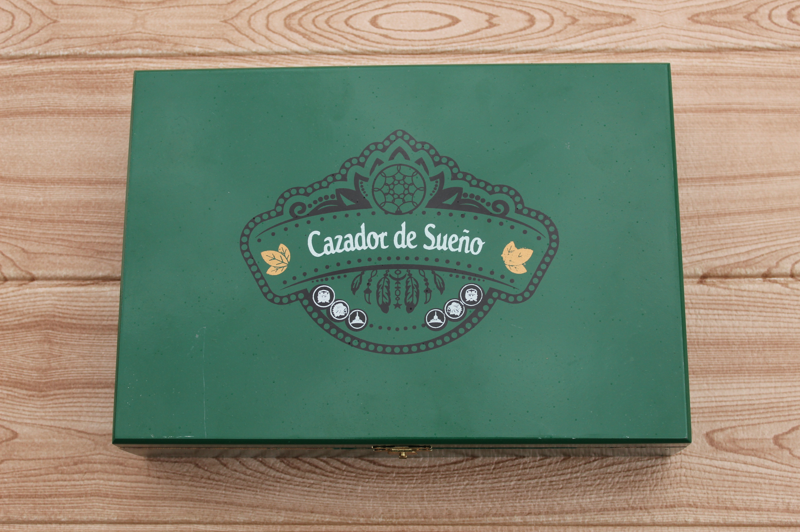
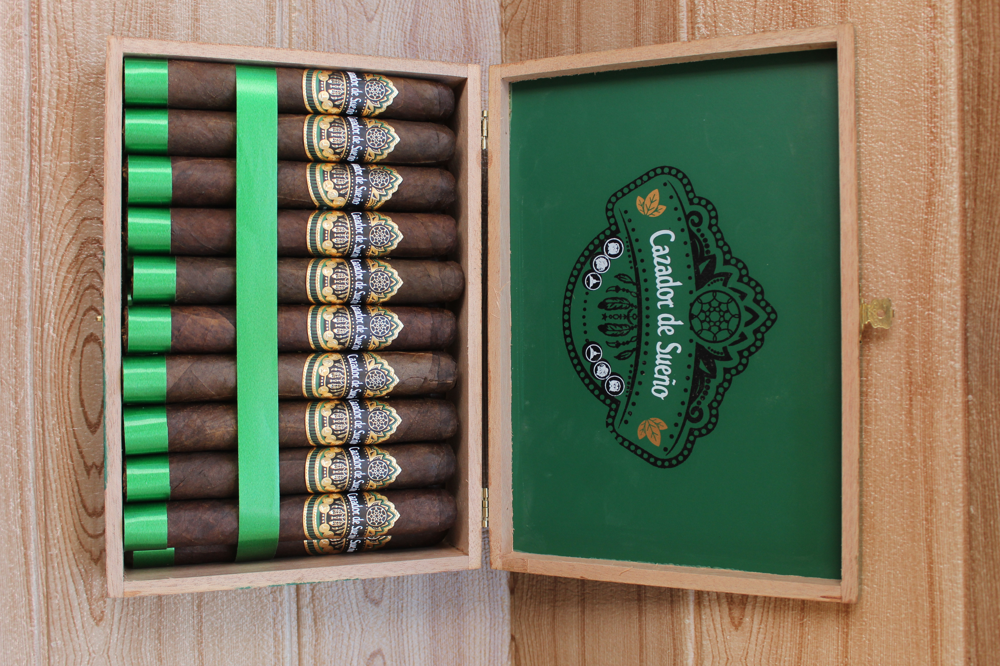

Formato / Vitola
Gran Toro 58 × 6″
Un calibre imponente y majestuoso que denota dominio y carácter.



El primer cigarro que nació en la fábrica Cazador de Sueños. Historia viva, herencia familiar y el sueño que lo inició todo.
Gran Toro 58×6 - El Primer Sueño
El cigarro fundacional de la fábrica, creado bajo el secreto de una fermentación especial de tabacos que me enseñó mi abuelo. No es una vitola más: es el punto de partida de toda una casa, el primer humo que dio nombre a un legado.
Gran Toro 58 × 6″
Un calibre imponente y majestuoso que denota dominio y carácter.
San Andrés Madura
México — seleccionada por su maduración perfecta, color chocolate profundo y notas dulces y terrosas.
Olor Dominicano
República Dominicana — aportando una suavidad aromática inigualable.
Selección Premium
República Dominicana y otros países secretos, curados con el método de fermentación familiar.
Medio-Fuerte
Un equilibrio perfecto entre cuerpo y sabor.
La fermentación especial revela su alma en tres actos — una narrativa de suavidad, riqueza y majestad digna del primer sueño de la casa.
La entrada es compleja y voluptuosamente cremosa. Un cacao suave, casi lácteo, se entrelaza con maderas finas de cedro y roble joven, mientras la capa San Andrés despliega su dulzor terroso con refinamiento. La fermentación especial se manifiesta en esa suavidad inicial — un abrazo sedoso que invita a permanecer, como el primer suspiro de un gran añejo recién descorchado.
La evolución alcanza una riqueza aromática impresionante. El café tostado emerge con profundidad, acompañado de especias suaves — canela, nuez moscada — que danzan con la elegancia floral del Olor Dominicano. Aquí la fermentación secreta despliega toda su complejidad: capas que se superponen con la precisión de un bouquet maduro, revelando matices que solo el tiempo y el saber ancestral pueden otorgar.
El desenlace es robusto pero impecablemente equilibrado. Cuero curtido y frutos secos — almendra, higo — construyen un final de carácter imperial, mientras una intensidad satisfactoria demuestra el temple de un verdadero Emperador. El postgusto es memorable y limpio: la firma silenciosa de la fermentación especial, un eco noble que permanece mucho después de que el humo se disperse.
Consultas privadasAntes de ser marca, fuimos sueño. Antes de ser fábrica, fuimos receta susurrada entre abuelo y nieto. El Emperador es ese primer amanecer — el humo que encendió todo lo demás.